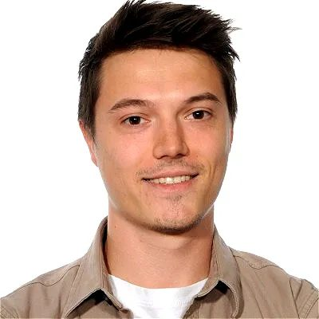
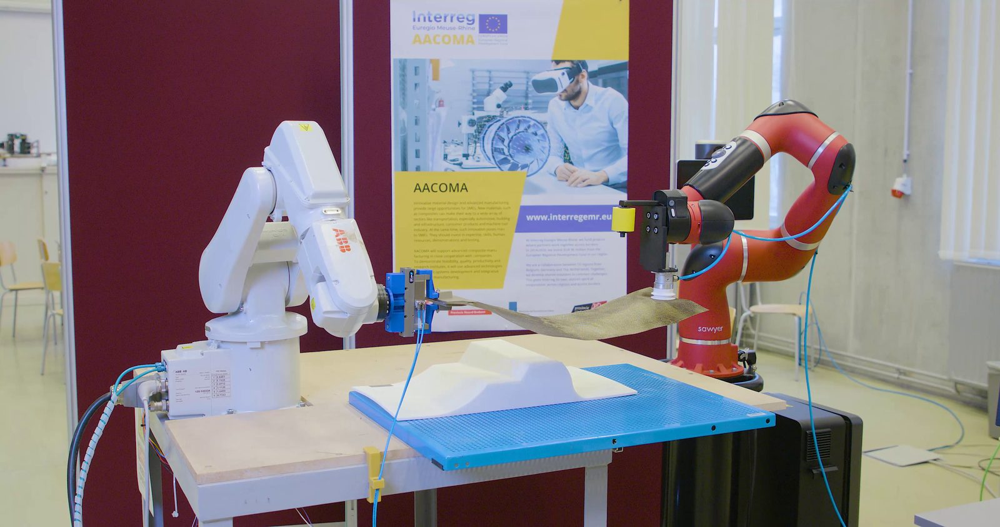
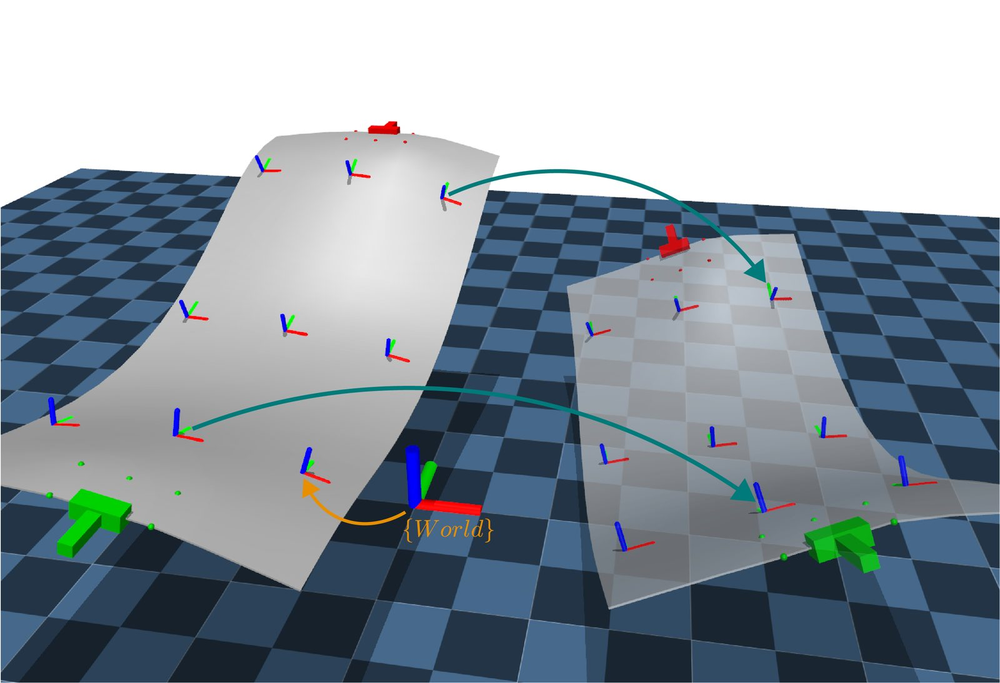

Louis Dehaybe
PhD Candidate in Robotics
Multibody and Mechatronic Systems Lab, University of Liège, Belgium
About me
Research interests
- Deformable object manipulation
- Shape servoing
- Lie group methods
- Multibody system dynamics
- Inverse dynamics
- Servo-constraints
- Underactuated systems
Hi ! I'm Louis, a final year PhD candidate in robotics at the University of Liège, Belgium, where I work in the Multibody and Mechatronic Systems Lab under the supervision of Prof. Olivier Brüls.
My research addresses the robotic manipulation of deformable objects, such as cables and fabrics, and the control of underactuated multibody systems. I combine multibody system modeling, control, Lie group methods and optimization. I validate concepts in simulation and through experiments on real robots.
Alongside research, I am a teaching assistant for several master's courses. I also love to share my enthusiasm for robotics beyond research, through hands-on workshops and demonstrations for secondary school pupils and the general public.
News
-
March 2027
Upcoming research stay at the Hamburg University of Technology (TUHH), Germany, in Prof. Robert Seifried's group. I will run experiments on their hardware to test my modified servo-constraint approach in the real world.
-
June 2026
Presented Adapting the servo-constraints model inversion method for robotic cable manipulation at the international conference of multibody system dynamics (IMSD) 2026, Seville, Spain.
-
February 2026
New journal paper, SE(3)-based representation of object deformations for robotic shape servoing, published in Robotics and Autonomous Systems. Check it out !
-
September 2025
Presented "SE(3)-based shape and deformation representations for adaptive control of deformable objects" at the International Conference on Highly Flexible and Slender Structures (HFSS 2025), Kaiserslautern, Germany.
-
July 2024
Attended the excellent EECI summer school "Control theory and machine learning" in Dubrovnik, Croatia.
Explore my work

Research and publications
Shape servoing of deformable objects, control of underactuated multibody systems, and the related papers.
Read more
Projects
Robotic draping of composite fabrics with two robots, autonomous mapping and grasping, and embedded systems.
Read more
Outreach
Robot programming workshops for school students, demonstrations, talks and teaching.
Read more
